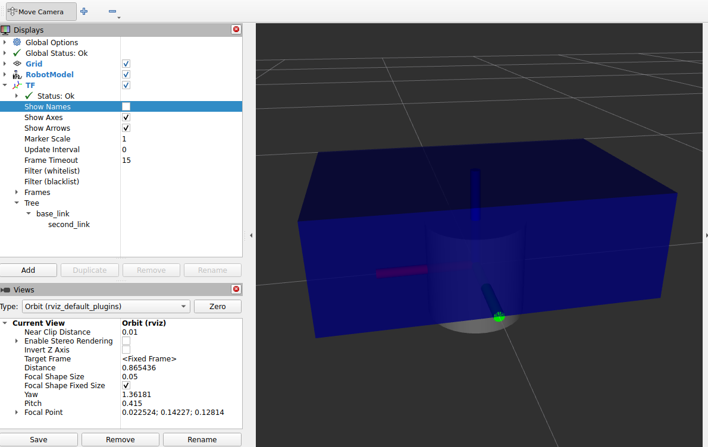
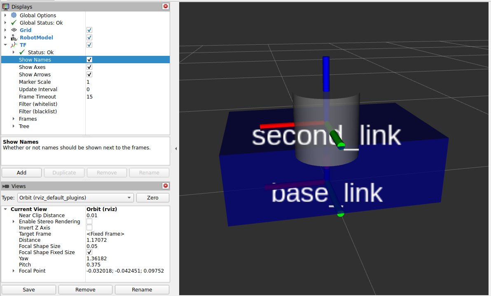
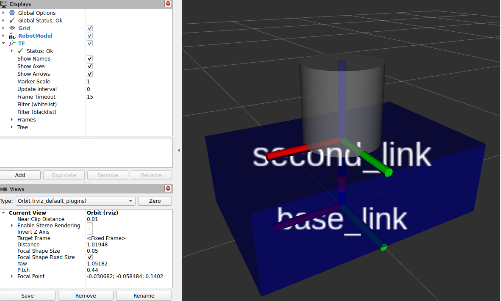
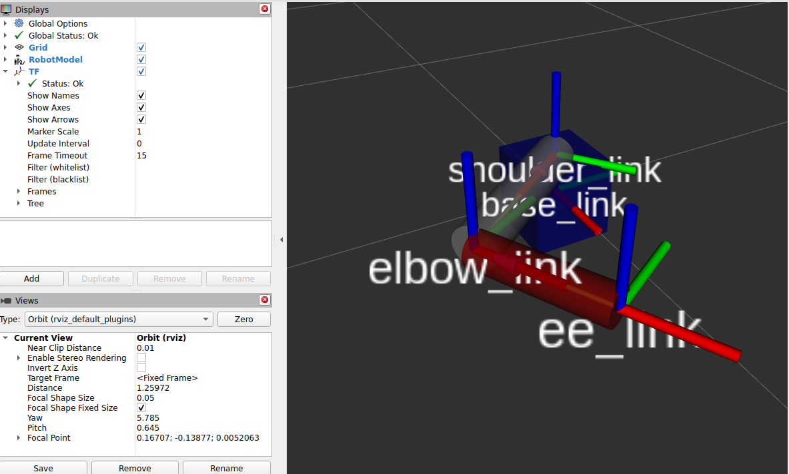

URDF Basics
In the previous section you saw an intuitive introduction to TF.
Now we begin building our own robot description so TF can be generated correctly.
A URDF file (Unified Robot Description Format) is an XML file that contains:
- Links: rigid parts of the robot (chassis, wheel, sensor housing, etc.)
- Joints: relationships between links (parent/child), which define TF frames and motion
You will also visualize your URDF in RViz2.
Learning goals
By the end of this lesson you will be able to:
- Create a valid URDF file (XML structure)
- Add a first link (
base_link) with a visual geometry - Add materials (colors) to make visualization readable
- Add a second link and understand the “multiple root links” error
- Add a fixed joint to connect links and generate your first TF
- Follow the correct debugging order: TF first (joint origin), visual later (visual origin)
Create your URDF file (no ROS package yet)
For now we create the URDF anywhere (e.g., home directory). Later we will place it inside a package.
Create and open the file:
URDF must start as XML and contain a <robot> tag
Add the XML header:
Add the robot root element:
Everything you write goes inside the <robot> ... </robot> tags.
Add the first link: base_link
A Link is a tag that defines a rigid part of the robot. We start with base_link because it’s commonly expected by tools.
We will add to <robot>, a single link with a visual tag that defines a geometry and an origin (position and orientation of the visual relative to the link frame):
<link name="base_link">
<visual>
<geometry>
<box size="0.6 0.4 0.2"/>
</geometry>
<origin xyz="0 0 0" rpy="0 0 0"/>
</visual>
</link>
Notes
- Units are meters
- Box size =
length width height - The visual is centered at the link frame by default
Visualize the URDF in RViz2
Use the urdf_tutorial display launch. From the folder containing your URDF:
ros2 launch urdf_tutorial display.launch.py model:=$HOME/oliver_ws/src/my_robot_description/urdf/my_robot.urdf
You should see:
- A box representing base_link
- Joint State Publisher GUI (no joints yet)
- RobotModel display with one link
Fix box position
By default the box is centered on the origin. To place it on the ground, offset the visual by half the height:
Height = 0.2 → half = 0.1
Change:
Re-run the launch and the box should sit on the ground.
Add a material (color)
If you don’t define a color, RViz often displays links with a default color (commonly red).
With many links, that becomes confusing. Define materials once, then reuse them.
Add this above your links (still inside <robot>):
Then inside the base_link <visual>, reference it:
So your base_link visual becomes:
<link name="base_link">
<visual>
<geometry>
<box size="0.6 0.4 0.2"/>
</geometry>
<origin xyz="0 0 0.1" rpy="0 0 0"/>
<material name="blue"/>
</visual>
</link>
Add a second link
Add a second link (example: cylinder). Inside <robot>:
<link name="second_link">
<visual>
<geometry>
<cylinder radius="0.1" length="0.2"/>
</geometry>
<origin xyz="0 0 0" rpy="0 0 0"/>
<material name="gray"/>
</visual>
</link>
Define the gray material (also inside <robot>, near the other material):
Now run the launch again:
You will get an error like:
- “Failed to find root link… Two root links found: base_link and second_link”
Why this error happens
A URDF must form a tree:
- one root link
- every other link connected by a joint
Two links with no joint means ROS cannot decide which link is the root.
Add a joint to connect the links
So let's fix it. Now we connect second_link to base_link with a fixed joint.
Add this inside <robot>:
<joint name="base_second_joint" type="fixed">
<parent link="base_link"/>
<child link="second_link"/>
<origin xyz="0 0 0" rpy="0 0 0"/>
</joint>
Now the URDF is a valid tree:
- base_link is the root
- second_link is a child
Run again and it will load in RViz2.
URDF workflow
When you create a URDF, you will often need to adjust the origins to get the geometry and TF frames in the right place.
At this stage the cylinder may look “wrong” (intersecting the box, floating, etc.).

That’s expected.
Rule: do NOT fix the visual first
You have:
- a joint origin (defines TF placement)
- a visual origin (offsets geometry relative to the link frame)
If you change both randomly, you will get lost.
Step 1 — Fix TF using the joint origin
We want second_link frame to be on top of the box.
Box height is 0.2, so move the joint up by 0.2 in Z:
Re-run RViz2 and enable the TF display.
You should now see second_link frame above base_link by 0.2 m.
This is the most important part: TF is now correct.

Step 2 — Fix the cylinder visual using the visual origin
The cylinder visual is centered at its link frame.
Cylinder length is 0.2, so half is 0.1.
Offset the cylinder visual in Z by 0.1:
Now the cylinder should sit nicely on top of the box.

Full URDF
This is a complete URDF that matches the steps above:
<?xml version="1.0"?>
<robot name="my_robot">
<material name="blue">
<color rgba="0 0 0.5 1"/>
</material>
<material name="gray">
<color rgba="0.5 0.5 0.5 1"/>
</material>
<link name="base_link">
<visual>
<geometry>
<box size="0.6 0.4 0.2"/>
</geometry>
<origin xyz="0 0 0.1" rpy="0 0 0"/>
<material name="blue"/>
</visual>
</link>
<link name="second_link">
<visual>
<geometry>
<cylinder radius="0.1" length="0.2"/>
</geometry>
<origin xyz="0 0 0.1" rpy="0 0 0"/>
<material name="gray"/>
</visual>
</link>
<joint name="base_second_joint" type="fixed">
<parent link="base_link"/>
<child link="second_link"/>
<origin xyz="0 0 0.2" rpy="0 0 0"/>
</joint>
</robot>
Run it:
